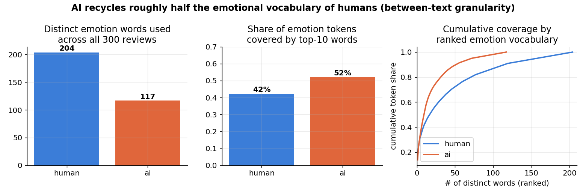
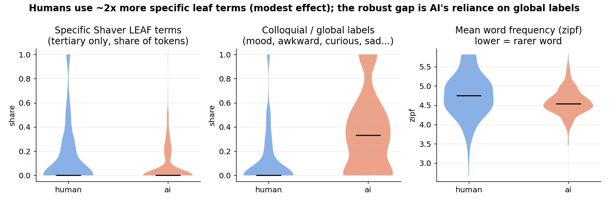
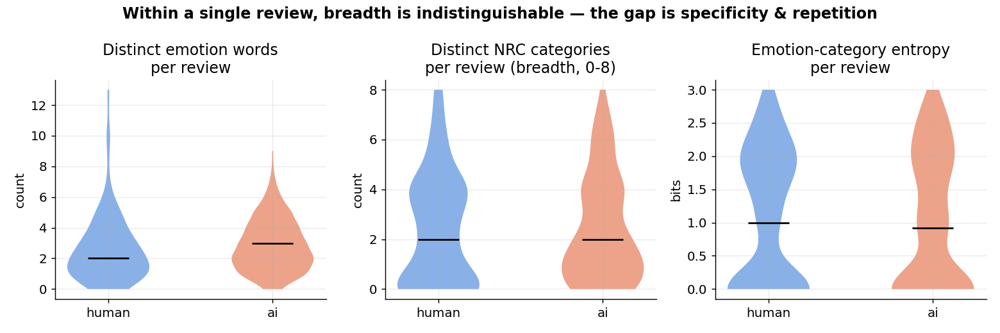
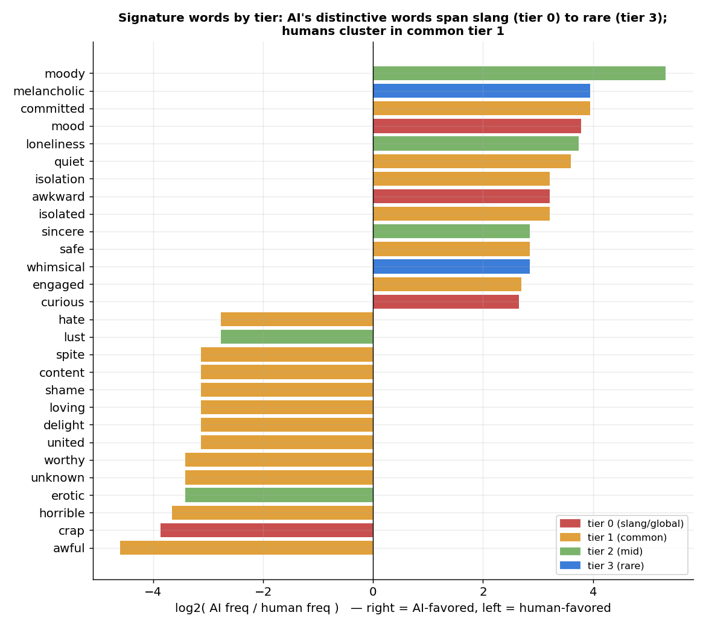
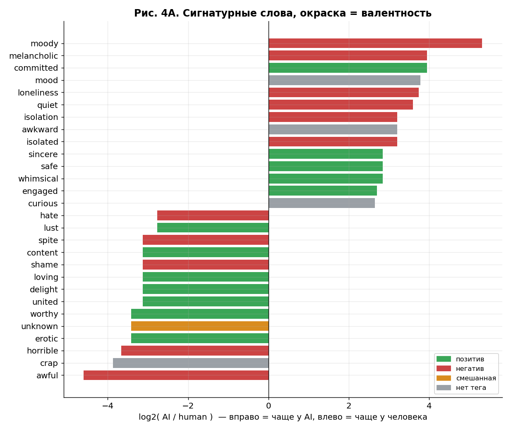
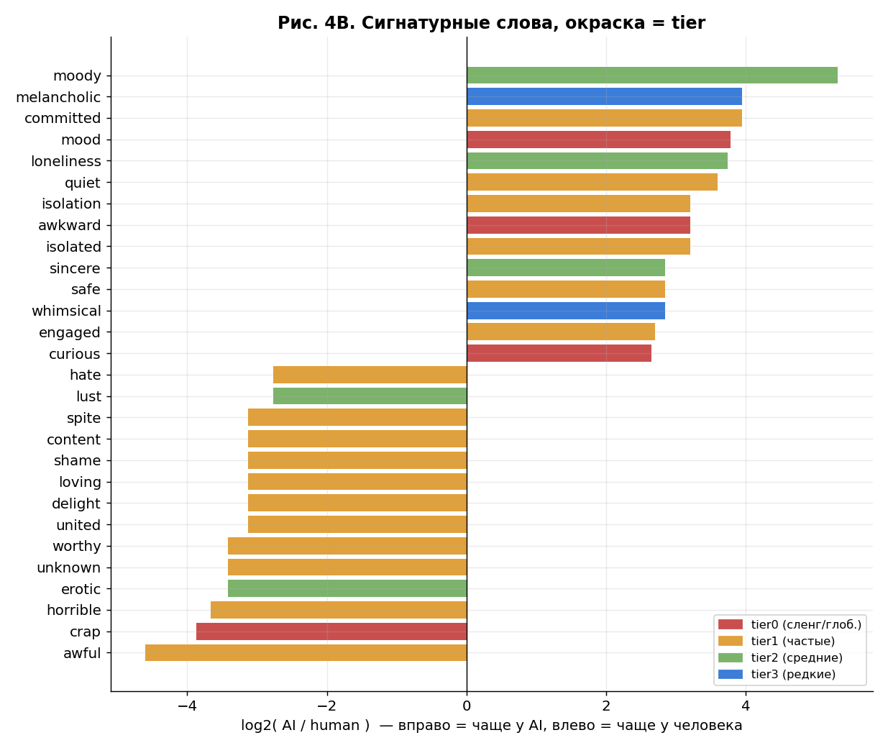
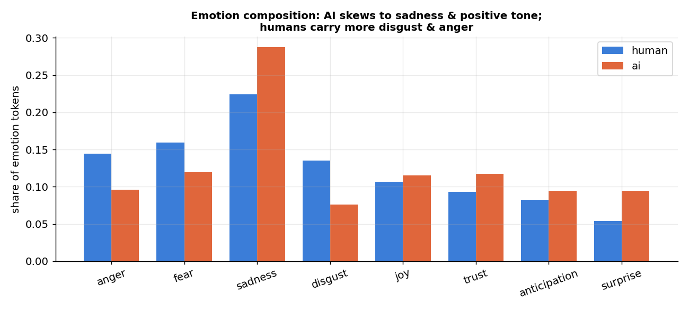
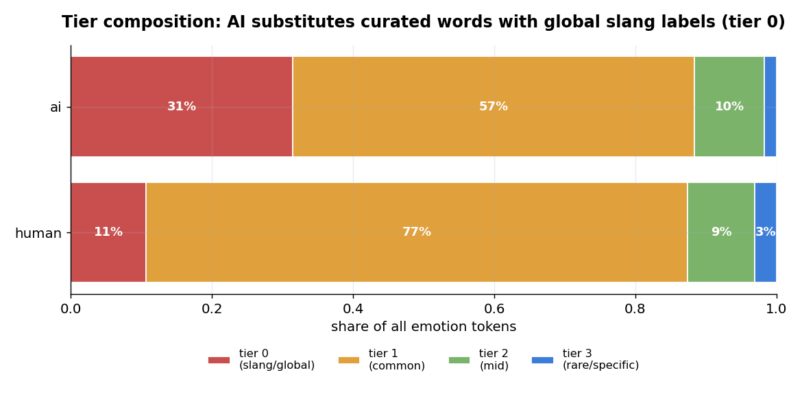

Your random scene
Data Storytelling opening game
What if
your
feelings
had
resolution?
Do our words still capture the full texture of what we feel?
This project explores the decline of emotional granularity in modern language.
Start with a short scene, describe your inner state, and see how precise your emotional vocabulary is.


annoyed
restless
relieved
homesick
indignant
tender
ashamed
jubilant
01
Interactive entry point
02
From your score to the evidence
Did your emotional granularity score surprise you?
Now we move from your answer to larger evidence. The following analysis explores whether emotional vocabulary has become less precise over time.
Modern interfaces often compress feeling into a few buttons: like, angry, sad, wow. Our project asks whether emotional language is becoming flatter, and whether rare, precise feeling words are giving way to simpler ones.
03
Evidence trail
Three windows into feeling
We follow emotion words from books, into Reddit, and then into AI-written movie reviews.
The project starts with a balanced dictionary of 432 emotion words: 144 basic labels, 144 middle-specific words, and 144 highly precise words. That dictionary becomes the ruler for the rest of the story.
Books
Do literary emotion vocabularies become more or less diverse across time?
When people write casually online, do they name feelings or signal them indirectly?
AI vs Human
When AI imitates human reviews, does it use emotion words with the same texture?
04
The ruler
Vocabulary map
First, we define what "more granular" means.
Instead of treating every emotion word as equal, the vocabulary is divided into three tiers. Tier 1 words are broad and easy to reach. Tier 3 words are more precise, rarer, and often more literary.
Tier 1 basic labels
Tier 2 middle specificity
Tier 3 precise words
413-word emotion map
Semantic constellation
rarer
more frequent
Wheel to zoom · drag to pan · hover for tier and trend
05
Books over time
Historical signal
The book data does not tell a simple collapse story.
Across NRC emotion categories, diversity dips in the mid-century and partially recovers later. Some emotion families, like joy, lose diversity; others, like surprise and anticipation, become more spread out.
The takeaway is not "all precise words disappeared." It is that emotional vocabulary shifts unevenly, so we need to look at everyday and machine-generated language too.
Shannon entropy index, 1900 = 100
Emotion diversity by decade
1900 to 2019, Google Ngram trend
Words moving up and down
06
Reddit comments
Everyday expression
Online emotion is often present, but not always named.
Human labels identify more than 38,000 emotional comments. Only 29.7% contain a word from the emotion dictionary. That does not mean the rest are emotionless; many comments express feeling through punctuation, context, caps lock, or a story event.
When emotion words do appear, they are overwhelmingly basic: Tier 1 words make up 93.84% of dictionary-word tokens, while Tier 3 words account for only 0.56%.
Human-labeled emotional comments
Coverage funnel
Dictionary-word tokens
Which tier gets used?
07
AI vs Human
Movie review experiment
AI does not simply use fewer emotion words. It uses a narrower emotional palette.
In 300 paired movie reviews, AI and humans produce similar amounts of emotion language. But AI's vocabulary is more concentrated: fewer distinct emotion types, heavier reliance on top words, and more untiered or generic labels.
Vocabulary concentration
Human palette vs AI palette
Tier composition
Specificity mix
Signature words
Words that pull human or AI
NRC emotion categories
Composition of the palette
Source figure board
The full AI vs Human figure set stays visible here.
The charts above translate several findings into the website's visual language. These panels keep every original exported figure from the AI vs Human folder in the story, so the audience can inspect the team's full analysis.
Figure 1
Vocabulary collapse
AI uses fewer distinct emotional word types and concentrates more tokens in its most frequent words.

Figure 2
Specificity
Human reviews are more likely to reach specific words, while AI leans harder on general emotional labels.

Figure 3
Within-text variety
This compares emotional variety inside each review, including emotion types and category entropy.

Figure 4
Word bias
Signature words show which terms pull more strongly toward human writing or AI writing.

Figure 4A
Bias by valence
The same word-bias result, grouped by emotional valence, helps reveal where positive and negative wording diverge.

Figure 4B
Bias by tier
This version places biased words back into the granularity tiers, connecting word choice to specificity.

Figure 5
NRC composition
AI and human reviews do not distribute emotion categories in exactly the same way.

Figure 6
Tier composition
The tier mix makes the granularity gap visible: AI has a larger untiered or generic share and less Tier 3 usage.

Emotional granularity is not just about having more words. It is about whether a culture, a platform, or a machine gives us room to choose the right word.